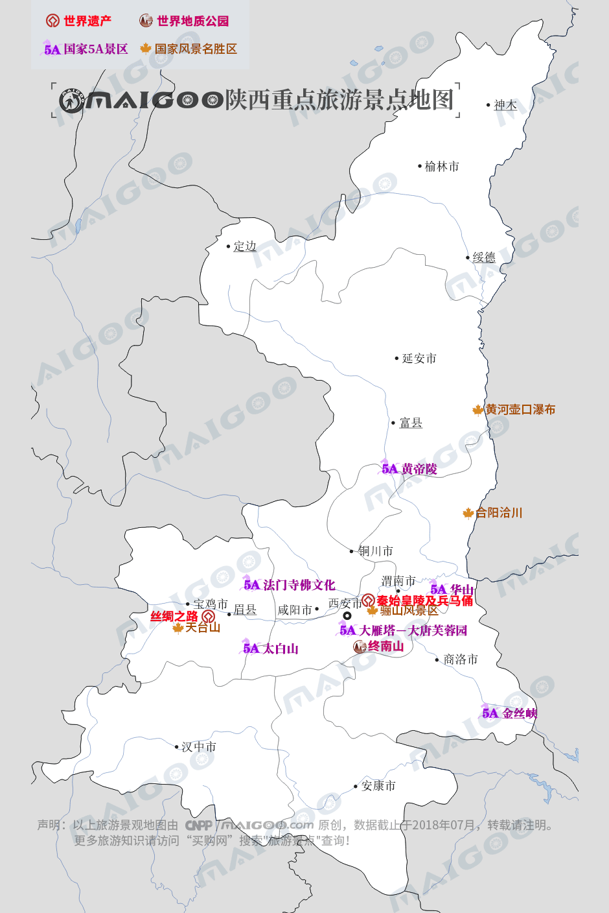

| | | | | |
| - | - | - | - | - |
|<b>别名</b>|陕、秦、三秦||<b>著名景点</b>|兵马俑、法门寺、华山、太白山、黄帝陵、大雁塔、长城等|
|<b>行政区类别</b>|省||<b>机 场</b>|西安咸阳国际机场 、榆林榆阳机场、汉中城固机场等|
|<b>所属地区</b>|中国西北||<b>火车站</b>|西安站、西安北站、宝鸡站、宝鸡南站等|
|<b>下辖地区</b>|10个地级市（含30个市辖区、72个县、5个县级市）||<b>车牌代码</b>|陕A/B/C/D/E/F/G/H/J/K/V|
|<b>电话区号</b>|029、0911—0917、0919||<b>GDP</b>|21898.81亿元（2017年）|
|<b>邮政区码</b>|830000-840000||<b>人均GDP</b>|57095元|
|<b>地理位置</b>|中国西部内陆腹地||<b>行政区划代码</b>|610000|
|<b>面 积</b>|20.58万平方千米||-|-|
|<b>人 口</b>|3835.44万（2017年末常住人口）||-|-|
|<b>方 言</b>|中原官话、西南官话、晋语||-|-|
|<b>气候条件</b>|北暖温带、亚热带季风性气候||-|-|
| <b>陕西生活文化</b> | <b>陕西特色文化</b> | <b>陕西曲艺文化</b> | <b>陕西建筑文化</b> | <b>陕西宗教文化</b> |
| - | - | - | - | - |
| <a href="javascript:;" onclick="live(this);">习俗/民俗</a> | <a href="javascript:;" onclick="feature(this);">陕西剪纸</a> | <a href="javascript:;" onclick="art(this);">陕西秦腔</a> | <a href="javascript:;" onclick="building(this);">陕西窑洞</a> | <a href="javascript:;" onclick="religion(this);">陕北宗教文化</a> |
| <a href="javascript:;" onclick="live(this);">方言文化</a> | <a href="javascript:;" onclick="feature(this);">陕北秧歌</a> | <a href="javascript:;" onclick="art(this);">老腔皮影戏</a> | - | - |
| <a href="javascript:;" onclick="live(this);">节日文化</a> | <a href="javascript:;" onclick="feature(this);">宝鸡社火脸谱</a> | <a href="javascript:;" onclick="art(this);">华阴老腔</a> | - | - |
| <a href="javascript:;" onclick="live(this);">嫁娶文化</a> | <a href="javascript:;" onclick="feature(this);">安塞腰鼓</a> | -|-|-|
| <a href="javascript:;" onclick="live(this);">饮食文化</a> | <a href="javascript:;" onclick="feature(this);">绥米唢呐</a> | -|-|-|
| <a href="javascript:;" onclick="live(this);">陕西禁忌</a> | <a href="javascript:;" onclick="feature(this);">陕北民歌</a> |-| -|-|
|-| <a href="javascript:;" onclick="feature(this);">陕西八怪</a> |-|-|-|
## <i class="fa fa-file-text-o"></i>&nbsp;目录（Table of Contents）
+ [I. 总路线图（暂无）](#one)
+ [II. 景点](#two)
+ [III. 路线规划（暂无）](#three)
<h2 id="two"><i class="fa fa-star-o"></i>&nbsp;景点</h2>
